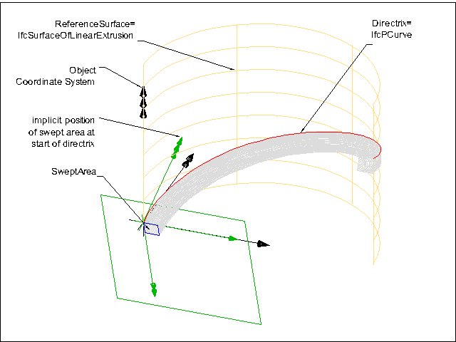

8.8.3.41 IfcSurfaceCurveSweptAreaSolid
8.8.3.41.1 Semantic definition
The IfcSurfaceCurveSweptAreaSolid is the result of sweeping an area along a directrix that lies on a reference surface. The swept area is provided by a subtype of IfcProfileDef. The profile is placed by an implicit cartesian transformation operator at the start point of the sweep, where the profile normal agrees to the tangent of the directrix at this point, and the profile''s x-axis agrees to the surface normal. At any point along the directrix, the swept profile origin lies on the directrix, the profile''s normal points towards the tangent of the directrix, and the profile''s x-axis is identical to the surface normal at this point.
The Directrix and the ReferenceSurface are positioned within the object coordinate system. The start of the sweeping operation is at the StartParam, the parameter value is provided based on the curve parameterization. If no StartParam is provided the start defaults to the begin of the directrix. The end of the sweeping operation is at the EndParam, the parameter value is provided based on the curve parameterization. If no EndParam is provided the end defaults to the end of the directrix. The geometric shape of the solid is not dependent upon the curve parameterization; the volume depends upon the area swept and the length of the Directrix.
At any point of the directrix, a plane can be constructed. The origin of the position coordinate system of the implicit plane lies at the directrix. The Axis3 (the z-axis, or normal) of the position coordinate system is identical to the tangent of the directrix at this point, the Axis1 (the x axis, or u) of the position coordinate system is identical to the normal of the reference surface at this point. The Axis2 (the y axis, or v) is constructed.
The resulting body of the swept solid is not repositioned if the inherited Position attribute is omitted. Otherwise the coordinate system established by the Position attribute is used to reposition the body relative to the object coordinate system.


{ .extDef}
The SweptArea is required to be a curve bounded surface lying in the plane z = 0 and this is swept along the Directrix in such a way that the origin of the local coordinate system used to define the SweptArea is on the Directrix and the local x-axis is in the direction of the normal to the ReferenceSurface at the current point. The resulting solid has the property that the cross section of the surface by the normal plane to the Directrix at any point is a copy of the SweptArea.
The orientation of the SweptArea as it sweeps along the Directrix is precisely defined by a Cartesian Transformation Operator 3D with attributes: > * Local origin as point (0., 0., 0), * Axis 1 as the normal N to the reference surface at the point of the directrix with parameter u. * Axis 3 as the direction of the tangent vector t at the point of the directrix with parameter u. The remaining attributes are defaulted to define a corresponding transformation matrix T(u), which varies with the directrix parameter u.
Informal Propositions
- The SweptArea shall lie in the implicit plane z = 0.
- The Directrix shall lie on the ReferenceSurface.
8.8.3.41.2 Entity inheritance
-
- IfcSolidModel
- IfcAnnotationFillArea
- IfcBooleanResult
- IfcBoundingBox
- IfcCartesianPointList
- IfcCartesianTransformationOperator
- IfcCsgPrimitive3D
- IfcCurve
- IfcDirection
- IfcFaceBasedSurfaceModel
- IfcFillAreaStyleHatching
- IfcFillAreaStyleTiles
- IfcGeometricSet
- IfcHalfSpaceSolid
- IfcLightSource
- IfcPlacement
- IfcPlanarExtent
- IfcPoint
- IfcSectionedSpine
- IfcSegment
- IfcShellBasedSurfaceModel
- IfcSurface
- IfcTessellatedItem
- IfcTextLiteral
- IfcVector
8.8.3.41.3 Attributes
| # | Attribute | Type | Description |
|---|---|---|---|
| IfcRepresentationItem (2) | |||
| LayerAssignment | SET [0:1] OF IfcPresentationLayerAssignment FOR AssignedItems |
Assignment of the representation item to a single or multiple layer(s). The LayerAssignments can override a LayerAssignments of the IfcRepresentation it is used within the list of Items. |
|
| StyledByItem | SET [0:1] OF IfcStyledItem FOR Item |
Reference to the IfcStyledItem that provides presentation information to the representation, e.g. a curve style, including colour and thickness to a geometric curve. |
|
| IfcSolidModel (1) | |||
| * | Dim | IfcDimensionCount |
This attribute is formally derived. The space dimensionality of this class, it is always 3. |
| IfcSweptAreaSolid (2) | |||
| 1 | SweptArea | IfcProfileDef |
The surface defining the area to be swept. It is given as a profile definition within the xy plane of the position coordinate system. |
| 2 | Position | OPTIONAL IfcAxis2Placement3D |
Position coordinate system for the resulting swept solid of the sweeping operation. The position coordinate system allows for re-positioning of the swept solid. If not provided, the swept solid remains within the position as determined by the cross section or by the directrix used for the sweeping operation. |
| IfcDirectrixCurveSweptAreaSolid (3) | |||
| 3 | Directrix | IfcCurve |
The curve used to define the sweeping operation. The solid is generated by sweeping the SELF\IfcSweptAreaSolid.SweptArea along the Directrix. |
| 4 | StartParam | OPTIONAL IfcCurveMeasureSelect |
The parameter value on the Directrix at which the sweeping operation commences. If no value is provided the start of the sweeping operation is at the start of the Directrix. |
| 5 | EndParam | OPTIONAL IfcCurveMeasureSelect |
The parameter value on the Directrix at which the sweeping operation ends. If no value is provided the end of the sweeping operation is at the end of the Directrix. |
| Click to show 8 hidden inherited attributes Click to hide 8 inherited attributes | |||
| IfcSurfaceCurveSweptAreaSolid (1) | |||
| 6 | ReferenceSurface | IfcSurface |
No description available. |
8.8.3.41.4 Formal representation
ENTITY IfcSurfaceCurveSweptAreaSolid
SUBTYPE OF (IfcDirectrixCurveSweptAreaSolid);
ReferenceSurface : IfcSurface;
END_ENTITY;